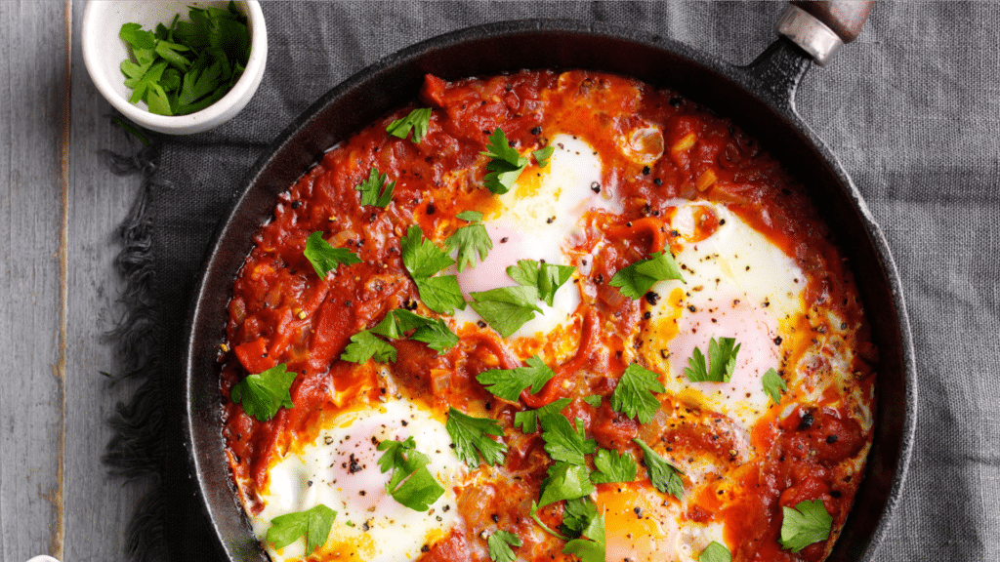
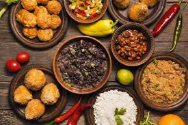

Bem-vindo ao Blog de Gastronomia!
Este espaço é dedicado aos apaixonados pela arte de cozinhar. Aqui você encontrará receitas incríveis, dicas práticas, curiosidades e muito mais sobre o mundo da culinária.
Destaques:

Receitas: Aprenda pratos deliciosos passo a passo!

Dicas Culinárias: Pequenos truques para grandes resultados na cozinha.

Curiosidades: Descubra fatos interessantes sobre ingredientes e pratos do mundo.